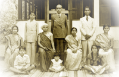

Getting back to our Roots
The Ramapuram Family traces its origins to a small town called Palai situated on the banks of the Meenachil River. Palai is situated in District of Kottaym towards the south of Kerala (also known as "Gods Own Country").
The members of the Ramapuram Family are the descendants of Varkey Ramapuram. Varkey Ramapuram was the son of Thommen Vellilapilly Kizhakedath of the Cholapilly family of Ramapuram town.
Around 1700 AD when Thommen Vellilapilly Kizhakedath passed away at a young age, his pregnant wife with his son came back to Palai from Ramapuram to live with her family. Since they came from the place called Ramapuram they were called Ramapurathe (from Ramapuram) hence the name stuck and now the descendants of Varkey are known as the Ramapuram Family.
Where we are from
The members of the Ramapuram Family are basically from a town called Palai in Meenachil Taluk, Kottayam District, Kerala, India. Palai is set on the banks of the Meenachil River and is known for its literature and Production of Rubber.
You can read more about palai at the Palai Page on Wikipedia
What's in here
For the members of the Ramapuram family and others who are connected to the Ramapuram Family I have put together the following:
The Family Tree
The highlight of the site is the family tree. Basically it is a program that stores all the information of the family members and links them with each other. It has links to media items and an option to upload media onto the site. Since the family is rather large and information changes regularly. The program facilitates many people to maintain the family tree. Details such as additions to the family, death, marriages can be edited with anyone who has the right to do so.
Help is more than welcome. I would like the active participation of all the family members in updating the tree. Currently there are around 1400 members in the family tree. I would like to see that number increase at least 20 times by the end of the year. Another point to note is that it is not enough to enter the details of a person on the family tree. We also have to collect some kind of record for the details of the person. We have a module called research assistant for that in the program.
A couple of years back I had been to the Cholapally family meeting and they wanted to reprint the book. With this program the information is always updated and there is no need for a book as all the information is available to anybody who has access to a computer.
The History of the Ramapuram Family
I was able to translate our family history from the Cholapilly Family History Book. The translated version is available here. The page details our family history very generally from the time of the Aryans migrated to India to the time Marthanda Varma attacked and annexed Vadakunkoor(AD 1751). It is only from then that we have a detailed account of our Geneology.
Webmail
For those of you who have an email account on ramapuram.net. This link takes you to the webmail program of Ramapuram.net. Those of you who do not have an account on ramapuram.net but would like to have one, write to me on contact page and I could create an account for you.
Media Gallaries
We have some old photographs of our family on the family tree portion of our website. The link above takes you to the multimedia page of the family tree. You may need to create an account to view the photographs but doing this real easy all you need is a working e-mail account. I will try to grant access priviliges ASAP.
Contact Us
If you have the urge to contact me just click on the link above fill in the form and hit submit. I will get back to you. I try avoid putting my email on website so spammers do not get a hold of it.
Like to see someting
If you have a great idea, or would like to see something added on to the site. Use the link above and send me a message. I will get back to you as soon as possible and let you know if it is possible. Any idea is great and ideas are always welcome.